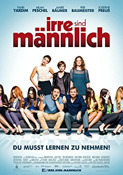

IMDB-Wertung: 5.6 / 10
IMDB-Wertung: 5.6 / 10  Metascore:
Metascore: 
 IMDB-Wertung: 5.6 / 10 Metascore:
Jahr: 2014
Dauer: 93 Minuten
FSK: 12
Land: Deutschland Studio: Constantin FilmTonspuren:
Untertitel:
Auflösung: 1080p (1920x816) Größe: 5468 MB
Genre: Komödie
Regisseur: Anno Saul
Drehbuch: Ilja Haller
Soundtrack: Peter Horn, Andrej Melita
Darsteller:
 Fahri Yardim als Daniel
Fahri Yardim als Daniel Milan Peschel als Thomas
Milan Peschel als Thomas Josefine Preuß als Mia
Josefine Preuß als Mia Marie Bäumer als Sylvie
Marie Bäumer als Sylvie Tom Beck als Carsten Diekmann
Tom Beck als Carsten Diekmann Herbert Knaup als Georg Trautmann
Herbert Knaup als Georg Trautmann Matthias Schweighöfer als Partygast
Matthias Schweighöfer als Partygast Arnd Schimkat als Uwe
Arnd Schimkat als Uwe Sky du Mont als Himself
Sky du Mont als HimselfDatei: X:\2014(G-M)\Irre sind männlich (2014, FSK12, 1920x816).mkv seit 30.04.2018
Festplatte: HD 2013(I-Z)-2014(A-Z)
 Es gibt insgesamt 136 Filme in der Gruppe '2014(G-M)'
Es gibt insgesamt 136 Filme in der Gruppe '2014(G-M)'